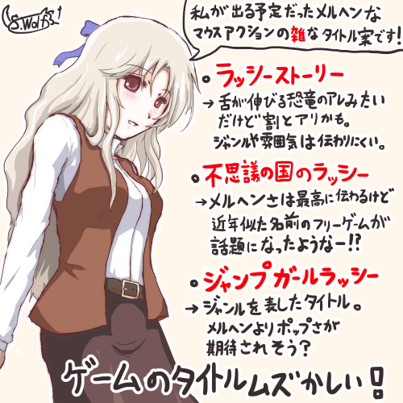

■2017-05-27 (土) 私のゲームタイトルの付け方▼
ご要望をいただいたので、今回は「ゲームタイトルの付け方」について、
個人的に意識していることをお話しします。

※人形とおもちゃの世界に飛ばされてしまった愛称ラッシー（仮本名ラーシア）の少女が
重量比の軽い人形軍団を蹴り飛ばしたりトランプの兵隊を四つ折りにしたりして
「これで暴力の快感に目覚めたらどうしよう……」などと不安になりながら元の世界に帰るべく旅をする物語で、
マウスだけで遊べるジャンプ方向アナログな「地上戦ベースのモノリスフィア」みたいになる予定でした。
といっても「タイトルの決め方」ってあまりに感覚的な話なので、
私も断定できるようなことはほとんどありません。
基本的には、私がこれまでやってきて「うまくいったかな」と思うことや、
私が開催しているゲームコンテストを見ていて感じたことなどを記していきます。
方向性としては、
「なるべくゲームのポテンシャル限界まで普及させる・人気を取る」ために
私が目指している内容です。
主な内容は以下の通りです。
●「英語」や「難しい漢字」を避けて覚えやすい名前に。
覚えやすいほど普及力の面で有利になりそう。
●『内容が伝わりやすいゲーム名』は、ライバルが多い中ほど有利そう。
●『前に遊んだゲームの関連作品だと分かる』よう、
ブランドを意識して名前を付けると長続きするかも。
●同じゲーム名がないか調べておく。
ネットを検索すれば他の方もたくさん似たような話をしておられるので、
これだけ読んで全部分かる人には飛ばしてくださっても大丈夫だと思います。
ここからは、各内容の詳細説明です。
【「英語」や「難しい漢字」を避けて覚えやすい名前にすると
普及力の面で有利そう】
もうこれは誰もが言っている話なんですが、「SNSなどでの普及力を上げる」目的なら、
「英語」や「難しい漢字」を使うのを避け、
覚えやすいゲーム名を目指す方が普及力の面で効率的です。
「打ち込みにくい文字」「誤字を誘発する単語」「長い名前」は、
●見た人がゲーム名を記憶することが難しくなる。
●情報を拡散してくれる人がゲーム名を打ち込むためのコストも増大する
ことから、人の頭に入るのも、場に出てくる回数も減ってしまいます。
逆に入出力コストが小さければ小さい名前であるほど、
人々への「ゲームタイトル」の記憶回数と出現回数は増えます。
「覚えやすく、入力しやすく、短い名前」というのはそういう点でとても有利で、
「正式名称の普及度」が段違いに上がります。
ユニーク（単一）な名前を目指す目的でも、難しすぎたり、
打ちにくい単語はあまり使わない方がいいだろうと今は考えています。
私の付けたゲーム名だと、『片道勇者』が覚えやすさと入力しやすさの面で
最もうまくいった例になりそうです。
一方、『シルフェイド幻想譚』は昔、
「譚」が漢字変換ソフトで出ないケースがあったり、
読み方が分からない人が一定数いらっしゃったので、
その点がちょっとマイナスに働いたかもしれないと感じているケースです。
なお、長いゲーム名でも「略称」がうまく流行すれば
普及の面での問題は小さくなります。
が、うまいことインターネットの検索対策をしないと
「略称」を検索してもサイトが見つからないことがあるので、
ゲームの公式サイトがあるなら公式ページ内に必ず略称も入れた方がいいと思います。
私のツール『WOLF RPGエディター』では、一時期「ウディタ」と入れても
直接サイトが見つからなかったので、公式サイトの先頭にも
「ウディタ」という略称を書いたという経緯があります。
＜日本でリリースする場合、英語は不利かも？＞
日本でアピールするにあたって、
「英語のゲーム名」は注意した方がいいかもしれません。
『Elona』ほどに誤字が発生しにくく
短いゲームタイトルなら全く問題ないと思いますが、
以下の条件に当てはまりそうなものは普及力の面で不利になると考えています。
●7文字以上のスペルの英単語が含まれる。
●スペルをまちがえそうな単語である（flightなど難しめです）。
rとlで迷う、erやorなどが入る英単語、など。
こういった単語が含まれる名前だと、SNSなどでは
「ゲーム名を間違えるリスク」などから名前を気軽に入力されにくくなってしまうので、
カタカナを使う場合より普及力が一定以上低下すると思っています。
日本で出す場合は、せめてその英語のタイトルを
そのままカタカナにした方が有利かもしれません。
たとえば「Celestial Silfade Story」は
私が雑に付けた『シルフェイド幻想譚』の英語名ですが、
もし正式名称がこの英語名の方だったら、
掲示板などで滅多に入力されなかったと思います。
特に「Celestial」の部分！ 長い！ エルとアールがややこしい部分もある！
ので、まだカタカナで『セレスティアル シルフェイドストーリー』
にする方がいいかもしれません。
それでも長すぎてあんまりですけれどね！
【『内容が伝わりやすいゲーム名』は、
ライバルが多い中ほど有利そう】
今はフリーゲームどころか、企業さまが送る
基本無料ゲームでさえもあまりに大量に出ていて、
ゲームのタイトルを覚えることも、全ゲームの詳細情報をチェックするのも
大変な時代になってしまいました。
こんな状況になると、個人開発のゲーム、あるいは企業製の「新作ブランド」も、
「一つ一つが注目される確率」は相対的にかなり低下すると私は考えています。
では、過去の資産に頼れない新作ブランドで売り出す場合は、
一体どんな名前にするのが普及させるにあたって効率的でしょうか？
そう考えた場合、だいぶ昔ながらの命名法である、
●ジャンル名やゲーム内容が強く伝わるゲーム名
を付けることは、割と強力な策なのではないかなと思っています。
というのも、
●現在はゲームの数が多すぎて、「名前のみ表示された一覧ページ」から飛んで
「詳細ページ」まで見てくれる人が割合的に減っているため
です。サイトにもよりますが、ダウンロードサイトで多くのゲームが並んでいる場合、
まず一番最初の一覧に出るのは「ゲーム名」と
「バナー・アイコン」（＋あって短い紹介文）が主で、
「詳しい紹介内容」はそのゲーム名をクリックして飛んだ先で表示されます。
現実世界の店舗で棚に置いてもらう場合も、ほぼ同様でしょう。
その中で少しでもお客さまに見てもらおうとするなら、
「ゲーム名」と「バナー・アイコン」だけでなんとか自分の作品に
注意を割いてもらうべく、情報を届けることが最重要です。
たとえば今のSteamでは、一日20～30件ずつゲームがアップされるので、
うちみたいな宣伝力に圧倒的に劣るところが何かゲームを出した場合、
「見ただけで興味を引く可能性がある名前＋バナー・アイコン」でないと
ほとんど注目されずに流れてしまうリスクがあると考えています。
「ゲーム一覧」に並んでいる時点でお客様を引き寄せるかなりの努力をしないと、
そもそもゲーム詳細ページまで開いてくれないでしょう。
1日何十本もゲームがリリースされている中で、
あなたがたまたま「ゲーム詳細ページ」まで飛んだゲームがあるのでしたら、
それは作者様やパブリッシャー様が「ゲーム一覧」の時点で
うまくお客様を引き寄せる仕事ができている、ということなのだと思います。
＜たとえばどんな名前を付ける？＞
たとえば名前が決まっていないファンタジーのシミュレーションゲームがあるとします。
それは、重厚で練り込んだ世界観がバックにあるゲームですが、
そこであえてジャンル名重視の
「タクティクスナイツ」という名前で売り出すことを考えてみます。
『タクティクスナイツ』なら、ファンタジー系シミュレーションRPGに興味がある人なら
ゲームタイトルだけ見て「もしかしたら好みに合うヤツかな？」と思われるでしょうし、
そのまま詳細説明ページまで見てもらえる確率も上がりそうに思えます。
もちろんその際、同時に表示されるであろうバナーやアイコンも、
雰囲気の方向性を伝えるのに役立つでしょう。
一方で、これが『タクティクスナイツ』という名前でなく、
ゲーム世界の名前から取って『クロモア・ロコマ』なんて名前にしていたら、
その名前だけではシミュレーションRPGを探している人は
クリックしなくなるかもしれません。
代わりに、「独特なアート系の雰囲気のゲーム」を探している人には
クリックされやすくなる名前かもしれませんし、アイコンの雰囲気と名前から
「世界観重視のRPG」を期待する人もいるかもしれません。
そういうお客様は、詳細ページを見て期待と違うゲームだと気付いたら
前のページに戻ってしまうかもしれませんけれどね。
「ゲーム名」は多くのプレイヤー候補を獲得するための「第一の網」です。
自分の欲しい作品を探している人に少しでも見つかりやすくなるよう、
「タイトル」で中身のジャンルや方向性などを表現できれば強力です。
先の『クロモア・ロコマ』の例を取っても、名前の付け方一つで、
「第一の網」にかかるお客様の層が恐らくガラっと変わってしまうので、
私としては一番興味を持ってもらえそうな人に届くよう名付けたいと思います。
それと、「バナーやアイコン、画面にこだわっておけば
タイトルはザツでもいいんじゃ？」
と思われることもあるかもしれません。
しかし、SNS上では
画面やアイコンなしでゲームタイトルの文字だけが挙がる
ことが一番多いので、そこで名前を見た
潜在ユーザさんに興味を持ってもらうためにも、
「ゲームタイトルそのもの」の重要度はとても大きいと考えています。
＜分かりやすさ重視の弱点＞
「分かりやすさ重視のゲームタイトル」は、もっぱら
「新しいゲーム性を持った作品」に使いやすい方法かもしれません。
ただこの発想で命名する場合、失敗するとタイトルがかっこ悪くなりがちだったり
あるいは雰囲気を伝えにくくなりがちなのが難点という気がしています。
たとえば前の方のイラストにある例の『ジャンプガールラッシー』は、
ジャンルの分かりやすさと引き替えに、メルヘン感の伝わり方が
だいぶ削れてしまっている印象があります。
一方で『片道勇者』は、「内容が伝わる名前」という方向性においては、
「かっこよさ」は微妙ながら「王道っぽさ」「RPGっぽさ」「戻れないゲーム性」は
伝わりやすいと思うので、そういった意味では
バランスがよい名前にできたと考えています。
【『前に遊んだゲームの関連作品だと分かる』よう、
ブランドを意識して付けると長続きしそう】
これはさっきの「内容を表現したゲームタイトルを付ける」とは
少し別の方向性になるかもしれません。
こちらは、私の経験談やブランドについてどう考えてきたか、
ということをお話しします。
私が本格的にインターネット上でゲーム制作者として活動し始めたとき、
長くやっていくことを前提にしていたので、
『ブランド』を確立していくべきだと考えていました。
最初に意図していたのは、以下の点です。
●タイトルを見ただけで同じ開発者が作ったということを分かるようにしたい。
→ たとえば私が最初に意図していたこととして、『シルフェイド』という世界を、
私が開発するゲームの共通の世界観として使うことで、
今後もタイトルを使い回しできるようにすることや、
連作にしてプレイヤーさんに続けて興味を持ち続けてもらうことを考えていました。
遊ぶ人は「作った人の名前」ではなく先に「ゲームタイトル」を見るはずなので、
同じ人が作ったということを示すなら
それをタイトルに込めた方が有効だと考えたのです。
『シルフェイド』という名前は当時、
競合がないオリジナルな名前であるにもかかわらず、
割と覚えやすく、たまたま私が思いついた名前の中では最高のものでした。
それもあってか、今では割と多くの人に認知されて感謝の限りなのですが、
仮にうまくいかなくても、
基本的には共用世界観としてずっとこの名前を使っていくつもりだったのです。
そして実際のところ、『シルフェイド見聞録』と『シルフェイド幻想譚』までは、
この発想はうまくいったように思えます。
今でも、『シルフェイド』と付いていれば
それだけで興味を持ってくださる潜在プレイヤーさまも、
たぶん少なくないと思います。時間経過と共に、徐々に減ってはいるでしょうけれどね。
＜ブランド付けの分岐点 方向性が違うゲームも同じブランドにすべき？＞
そしてあるとき、『シルフェイド』のブランド付けの分岐点が訪れました。
私が初めてアクションゲームを作ろうとしたときに、
そのゲームに『シルフェイド』と付けることも考えたのですが、
『ジャンルが大きく違う場合は完全に別のゲームタイトルを付けた方がいいかも』
と立ち止まることになりました。
プレイヤーさんから、以下のような感じ方をされるかもしれないからです。
●『シルフェイド』って名前が付いていたから、
これまでに近いゲーム性を期待して始めたのに、
いざやってみたら完全に人を選ぶアクションゲームじゃないか！ なんだこれは！
これは、それまでアドベンチャーやRPGとして
2作出していた『シルフェイド』シリーズの次に、
マウスアクションゲーム『モノリスフィア』を作る際に私が想像していたことで、
「あまりにゲーム性が違う場合は同じ名前を付けるのは危ないかな」と考えていました。
それまでに、『シルフェイド』という名には
「とりあえずほぼ誰でも遊べるゲーム」という印象が
根付いてきた感じだったので、それはそれで大事にしたいなと私は思いました。
もしここで『シルフェイド』という名前に対し、
「この名には人を極めて選ぶゲームも含まれる」
という警戒感を持たれてしまったら、
安心感という意味でのブランド価値は一定量落ちてしまうでしょう。
それはちょっと今後を考えるともったいないかな、と私は考えました。
その結果、私は新作のアクションゲームに、
まったく別の名前である『モノリスフィア』と名付けることにし、
世界観も新たなものにしたのです。
＜同じ名前を、大きく異なるジャンルで使えるか？＞
ちなみに、家庭用ゲームの世界では
「元がアクションやシューティングゲームだったシリーズの世界観を
シミュレーションゲームとして出したりしてうまくいっている例」
などもあったので、「アクションにするから別の名前にしよう」という発想が
よかったのかどうかは、今になっても分かりません。
例えば家庭用ゲームにおいて、●●という名のアクションゲームが、
「●●ウォーズ」というリアルタイムストラテジーゲームになったり、
▲▲というシューティングゲームが
「▲▲タクティクス」という戦略シミュレーションゲームになったり、
といった事例が過去に存在しています。それなりにうまくいっていました。
ただ、このケースでは「リアルタイム進行」のアクション/シューティングゲームから
ある程度進行がゆっくりめまたはターン制のシミュレーションゲームになっていたので、
その部分もある程度うまくいっていた理由なのかもしれません。
理屈を付けるとしたら、以下の通りです。
●「激しいアクションゲームができる人が、シミュレーションゲームを遊べる可能性」
はそれなりに高いと予想される。
●逆に「シミュレーションゲームしか遊ばない人が激しいアクションを遊べる可能性」
は低そうな気がする。
（仮にアクション化するなら、ゆるめで素直なゲームの方がよさそう？）
上記の推測はたぶん、ある程度は合っていると思うのですが、
こういった仮説の上では、『モノリスフィア』に
『シルフェイド』系の名を付けようとした例のように、
「ターン制ゲームのシリーズと同じゲームタイトル」を付けて
「人を選ぶ変則操作のアクションゲーム」を出すのは危険すぎる気がしています。
結果として、それまで『シルフェイド』という名前を使っていたけれど、
変則操作マウスアクションゲームに『モノリスフィア』という
新たな名前を付けたことには、今でも満足しています。
そして、もし違うジャンルでブランドを使い回す場合は、
「アクションゲームのブランドをターン制ゲーム化する」
（ゆるい方向に変化させるのはＯＫ）
という方向性で使った方がいいかもしれない、と今は思っています。
私はこういった発想で、ブランド面を意識したゲームのタイトルを付けてきています。
＜現状のブランド＞
今のところ、私の作るゲームでは、以下のような使い分けで
ブランド化していくことを考えています。
●『シルフェイド』シリーズ
→ 攻略法を知れば割と誰でもクリアできる、
お話が多めの固定ステージ進行のターン制ゲーム。
ランダム生成なゲームはあまりこの名を使わないようにしたいと考えています。
●『片道』シリーズ
→ 腕前を問われる、お話少なめのアドリブ重視ターン制ゲーム。現在次回作開発中。
これも最初は、『シルフェイド』と付けてしまうと
「なんだこれは！」と言われそうだったので、
『シルフェイド』の名は使わず、別名として『片道勇者』と付けました。
●その他：オリジナル名の変則アクション
→ 人を選ぶ、変わった操作性のアクションゲーム。もちろんリアルタイム進行型。
シリーズ・ブランド化する前提としては部分的にでも
「世界観の共有」が必要だと思うので
毎回世界観が変わるアクションではブランド化はなかなか難しそうです。
ちなみに、アクションゲームではそこまでギチギチに物語を詰めなくてもいいので、
私のネタの中で使われずに浮いている短いストーリーや
世界観を突っ込むのに便利に使わせていただいております。
●それ以外のゲーム
→ 世界観が違っても、付けられそうならとりあえず「シル」だけでも
名前の先頭に付けてみて、うちのゲームっぽさをアピールします。
すごい雑な発想ですが、『シルエットノート』もその考えで名付けられました。
『シル』と先頭に付いたゲーム名を見たとき、ごく一部の人でいいので
なぜか私のことを一瞬思い出せるくらいには
印象に残せるといいなという期待があります。
という感じです。ブランドを考慮して名前を付けられれば
それまでの「知名度資産」とでもいうべきものを活かしやすくなるので、
ゲーム開発人生を長続きさせやすい気がしています。
長く続けていきたいとお考えの方は、よければぜひご一考を。
【同じゲーム名がないか調べておく】
最後に。すごく当たり前ですが、思いついたタイトルは必ず検索エンジンでかけて、
同名の既存作品がないか調べておきましょう。
といっても、今回述べた中の「内容が伝わりやすい名前」を付ける場合、
「ありきたりな単語」だけで分かりやすいゲームタイトルを組もうとすると、
かなりの確率ですでに同名のゲームが存在するんですよね！
さっき挙げた『タクティクスナイツ』などは偶然にも
日本語ゲームにはまだなさそうですが、
こんなシンプルな名前ほど、
すでにその名前のゲームが存在していることが多いはずです。
『片道勇者』なども、こう名付けられたのはたまたま運がよかっただけです。
もしまだ誰も名付けていない
「非常に分かりやすく内容を表せるゲーム名」を思いついたのなら、
誰かとかぶってしまう前に、早く発表したほうがいいかもしれません。
できれば念のため、「商標」も検索しておくとよさそうです。
ということで、私がぼんやり考えている、
「なるべく普及させる/長続きさせるつもりで考えているタイトルの付け方」
として意識していることを一通り紹介させていただきました。
ゲームタイトルは潜在ユーザさんに興味を持ってもらう第一の網である都合上、
名前が違っていればここまで遊ばれなかっただろうな、と思うゲームも、
私が開発してきた中にはあります。
一方で、名前がイマイチで私が作ったことに気付かれていなかったり、
覚えにくかったりしたであろうものもあるので、
中にはゲームタイトルが普及の足を引っ張ってしまったものもあると思います。
「違うタイトルで同じゲームを出す」ことはできないので、
ゲーム名の差による効果を検証することはなかなかできません。
なので、今回お話ししたこともどれだけ有用か、私にはあまりハッキリしません。
最終的には皆さんのお好きなように付けてくださればいいと思っていますが、
寄せられる範囲で、
「潜在ユーザさんに興味を持ってもらえる確率が高まる」よう意識してみたり、
「ゲーム開発を長く続けることも考慮に入れて名付けてみる」ことで、
ゲームのポテンシャルを最大限に引き出す結果を出せるかもしれません。
できれば私も、他の人のも並んだゲーム一覧を眺めて、
ゲームタイトルやバナー・アイコンを見ただけで
「これは商品ページを開きたくなる」「これはそうではなさそう」
と直感できるセンスも鍛えていきたいですね。
私の場合はSteamをときどき見ているんですが、
つくづく「分かりやすいタイトルは強いな！」と感じます。
私が詳細ページまで飛ぼうと思えるゲーム名は、
●内容が想像できる、自分の興味と合うゲーム名
●どこかの記事ですでに見たことがあるゲーム名
の2つだけでほぼ100％になります。
皆さまのゲーム選びにおいても、これと近い基準の方は多いかもしれません。
自分のゲームも、せめて「詳細ページ」まで見てもらえるよう、
興味を持ってもらえるゲーム名にすることを心がけたいです。
来週はこのお話のおまけとして、私の各ゲームの名前について
簡単に自己レビューしていこうと思います。
そして「こんな話を聞いてみたい」などの拍手コメントをお寄せくださっている皆さま、
いつも本当にありがとうございます！ お答えできそうなものは、
ぜひ今後の記事で取り上げさせていただきたいと考えております。
 | ← 今回のような記事を 1冊の本にまとめたゲーム開発本、 『ゲーム開発者の地図』、 Kindleで好評発売中です！ |
2017-05-27 (土)  カテゴリ: 開発日誌
カテゴリ: 開発日誌
 カテゴリ: 開発日誌
カテゴリ: 開発日誌